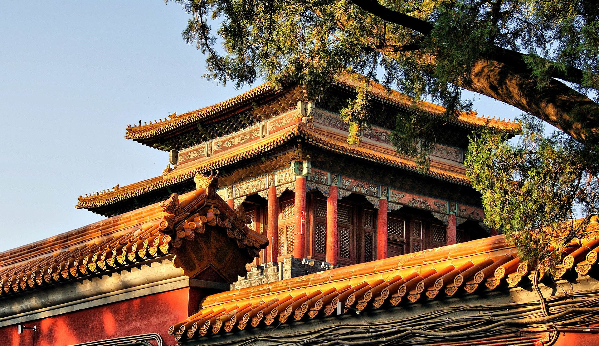
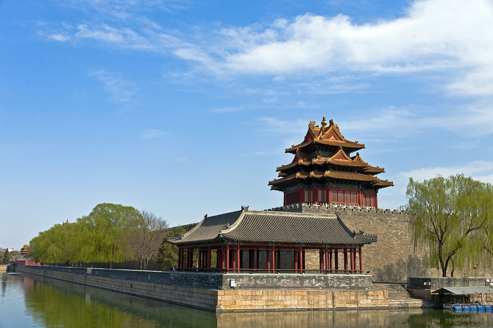

The Forbidden City is a rectangle, with 961 metres (3,153 ft) from north to south and 753 metres (2,470 ft) from east to west. It consists of 980 surviving buildings with 8,886 bays of rooms. A common myth states that there are 9,999 rooms including antechambers,[34] based on oral tradition, and it is not supported by survey evidence The Forbidden City was designed to be the centre of the ancient, walled city of Beijing. It is enclosed in a larger, walled area called the Imperial City. The Imperial City is, in turn, enclosed by the Inner City; to its south lies the Outer City.
The Meridian Gate
Close-up on the left protruding wing

At the four corners of the wall sit towers with intricate roofs boasting 72 ridges, reproducing the Pavilion of Prince Teng and the Yellow Crane Pavilion as they appeared in Song dynasty paintings. The wall is pierced by a gate on each side. At the southern end is the main Meridian Gate. To the north is the Gate of Divine Might, which faces Jingshan Park. The east and west gates are called the "East Glorious Gate" and "West Glorious Gate". All gates in the Forbidden City are decorated with a nine-by-nine array of golden door nails, except for the East Glorious Gate, which has only eight rows.
Northwest corner
tower and moat

The Meridian Gate has two protruding wings forming three sides of a square (Wumen, or Meridian Gate, Square) before it. The gate has five gateways. The central gateway is part of the Imperial Way, a stone flagged path that forms the central axis of the Forbidden City and the ancient city of Beijing itself, and leads all the way from the Gate of China in the south to Jingshan in the north. Only the Emperor may walk or ride on the Imperial Way, except for the Empress on the occasion of her wedding, and successful students after the Imperial Examination.